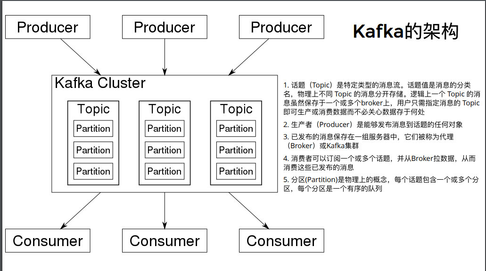

消息队列Kafka
主流消息队列：
- Kafka
- RabbitMQ
- ZeroMQ
- 阿里的RocketMQ
1. 优点
- 应用解耦。消息是平台无关和语言无关的，消息队列可以应对多变的产品变更
- 异步通信。可以缩短请求等待的时间，使用专门处理请求的消费者来执行，提高Web页面的吞吐量，尤其是瞬间发生的高流量情况，消息队列非常有助于顶住访问压力
- 数据持久化。未完成的消息不会因为某些故障而丢失
- 送达保证。消息队列提供的冗余机制保证了消息确实能被处理。除非消费者明确表示已经处理完了这个消息，否则这个消息可以被放回队列中以备其他消费者处理
2. Kafka架构

- 话题（Topic）是特定类型的消息流。话题值是消息的分类名，物理上不同 Topic 的消息分开存储。逻辑上一个 Topic 的消 息虽然保存于一个或多个broker上，用户只需指定消息的 Topic即可生产或消费数据而不必关心数据存于何处
- 生产者（Producer）是能够发布消息到话题的任何对象
- 已发布的消息保存在一组服务器中，它们被称为代理（Broker）或Kafka集群(Cluster)
- 消费者可以订阅一个或多个话题，并从Broker拉数据，从而消费这些已发布的消息
- 分区(Partition)是物理上的概念，每个话题包含一个或多个分区，每个分区是一个有序的队列
3. 安装和使用
1. 安装
- 下载并解压数据
- 由于kafka依赖zookeeper服务来运行，可以根据教程启动单一的zookeeper来启动kafka服务 zookeeper是一个分布式的，开放源码的分布式应用程序协调服务，它包含一个简单的原语集，分布式应用程序可以基于它实现同步服务，配置维护和命名服务等。
- 由于需要使用Java，我使用了
sudo yum install java来安装解决 - 服务启动在了tmux里面
2. 使用
- 参照文档的命令行发送/接收消息
使用python库kafka，代码见后文。 kafka默认端口9092，发送接收均为byte类型
producer.py 生产者发送消息
# from kafka import KafkaProducer from kafka.errors import KafkaError producer = KafkaProducer(bootstrap_servers=['localhost:9092']) future = producer.send('test', b'raw_bytes') try: record_metadata = future.get(timeout=10) except KafkaError as e: print(e) exit(1) print(record_metadata.topic, record_metadata.partition, record_metadata.offset) producer.send('test', key=b'foo', value=b'bar')consumer.py 消费者自动监听
from kafka import KafkaConsumer consumer = KafkaConsumer('test', bootstrap_servers=['localhost:9092']) for message in consumer: print(f'{message.topic}:{message.partition}:{message.offset}: key={message.key} value={message.value}') # noqamsgpack_producer.py 使用了msgpack包序列化消息(
It's like JSON.but fast and small.)import msgpack from kafka import KafkaProducer from kafka.errors import KafkaError producer = KafkaProducer(bootstrap_servers=['localhost:9092'], value_serializer=msgpack.dumps) producer.send('test', {'key': 'value'}) producer.flush()msgpack_consumer.py
import msgpack from kafka import KafkaConsumer consumer = KafkaConsumer('test', value_deserializer=msgpack.unpackb, bootstrap_servers=['localhost:9092']) for message in consumer: print(f'{message.topic}:{message.partition}:{message.offset}: key={message.key} value={message.value}') # noqa
4. 参考资料
- kafka介绍和教程，讲了kafka的一些概念，消息保存关系，如何扩展，消费组关系，组内消费关系，何时删除消息等
- 详细介绍kafka和zookeeper